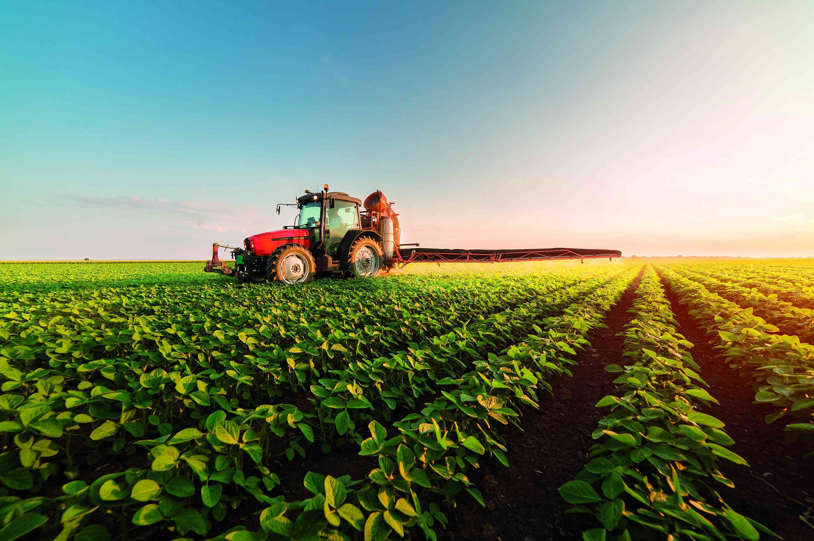

A HortWestfal é uma empresa especializada em insumos agrícolas, comprometida com a produtividade, inovação e sustentabilidade no campo. Trabalhamos com soluções modernas que ajudam produtores a alcançar melhores resultados com eficiência e responsabilidade ambiental.
HortWestfal
Soluções inteligentes em insumos para o agronegócio 🌱
Sobre Nós
Nossos Valores
- Inovação: Uso de tecnologia para melhorar o campo
- Sustentabilidade: Respeito ao meio ambiente
- Qualidade: Produtos confiáveis e eficientes
- Parceria: Crescimento junto ao produtor rural
Nossas Soluções

Fertilizantes
Nutrição completa para o solo e aumento da produtividade.
Defensivos Agrícolas
Proteção eficiente contra pragas e doenças.
Sementes
Alta performance genética para melhores colheitas.
Por que escolher a HortWestfal?
- Atendimento especializado
- Produtos de alta qualidade
- Foco em resultados no campo
- Compromisso com inovação
Fale Conosco
Impulsione sua produção com a HortWestfal
Entre em contato e descubra como nossas soluções podem transformar seus resultados no campo.